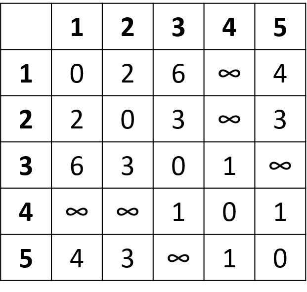

魔法旅遊 (進階題)
BMI博士要到漫威星系的城市找蜘蛛人，某些城市間有S博士的魔法傳輸通道可走。請找出一條能從 X 城市到 Z 城市 的最短通道數的路徑。
輸入說明
1. 第一行 N, X, Z, Y，N 是傳輸通道數量，X 代表起始點，Z 代表終點，Y 代表中途必到點，若沒有 Y，則不考慮中途點。
2.之後 N 行，每一行 A B，代表 A 城市與 B 城市間有魔法傳輸通道。
輸出說明
1. 找出 X 中途經過 Y 城市抵達 Z 的路徑，若存在，則輸出走過最少通道個數與最短路徑。
2. 若不存在此路徑，輸出 NO。
Input/Output

hints
Dijkstra algorithm

#include <stdio.h>
int main(){
//Dijkstra algorithm
//途中必經過某一點
//將問題拆成兩部分：
//起點到必經點、必經點到終點
return 0;
}
賓果遊戲 (進階題)
A, B 兩位玩家玩賓果遊戲，每位玩家各自輸入一個 N×N的矩陣，數字從 1~N×N，
假設 N=3
接著從 1~N×N 的數字選擇 M 個數字，其中 1<=M<N×N。
例如 M=4，四個數字是 6, 1, 7, 3。
則 A, B 玩家的矩陣分別為：

輸入到 7時，B玩家先達成 1條連線，A玩家還沒連線，因此 B 玩家獲勝。
判斷勝負：
1. M 個數字依序出現在任一玩家矩陣中連成一條對角線、垂直線，或水平線，先連成線的玩家獲勝。
2. 若兩位玩家同時連線，或都沒有連線，則平手。
輸入說明
Line 1, 整數 N M
Line 2, A 的 N×N 個數字
Line 3, B 的 N×N 個數字
Line 4, M 個數字
輸出說明
A玩家獲勝，輸出A Win
B玩家獲勝，輸出B Win
平手輸出 Tie
Input/Output

hints
#include <stdio.h>
int main(){
//輸入N、M
//輸入玩家A、B的賓果卡
//輸入M個數字並模擬賓果遊戲過程
//玩家A、B的賓果卡上，將剛剛輸入的數字設為-1
//檢查連線：-1有連成一線的就是連線成功
return 0;
}